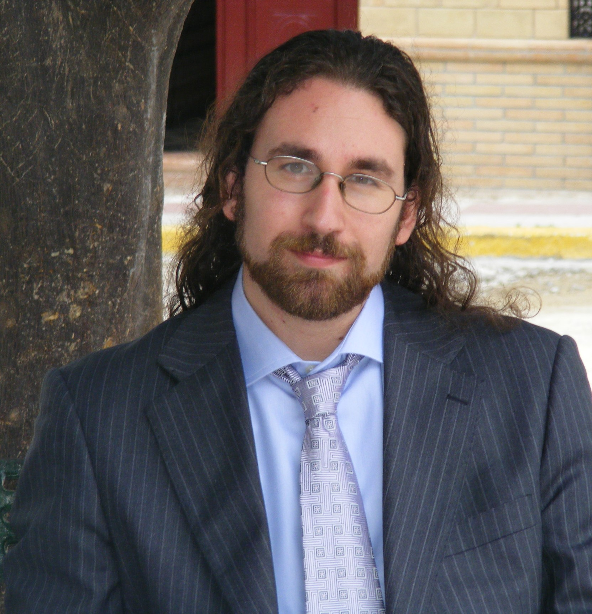

Reparador jefe del grupo, más de 20 años de experiencia reparando elementos eléctronicos, no hay tamagotchi que se le resista, cuenta la leyenda que de 20 trabajadores que eran en su empresa, solo trabajaba él. Tiene carácter de lider, todas las actividades se le dan bien, trabaja muy bien en equipo. Es un gran conocedor de bares en puente de Vallecas, tiene dos niños pequeños y un coche a todo riesgo que cada noche se expone a ser golpeado porque hay gente muy pinzada en la zona en la que habita.
Verificador jefe del grupo, su visto bueno antes de la entrega es indispensable. Le llamamos Rick pero también es conocido como Teis por sus allegados más cercanos. Tiene un Ford con una repro, ya que el escape tiene que ser libre para que el asfalto vibre. Conoce los mejores anéstesicos tradicionales cuando tienes un dolor. El fala Galego pero también inglés porque vive en Luxemburgo, donde nunca pasa nada hasta que un día pasa. Cuenta la leyenda que tras romperse la rodilla está se reparo mágicamente.

Gestor de reuniones del grupo, organiza los horarios y las quedadas para que todos puedan asistir, su nacionalidad es Española, pero en los escritos importantes
pone Pablov. Métodico hasta que se demuestre lo contrario, grandes dotes de paciencia al igual que grandes manos y pies. Dice ser programador y también saber contar hasta rojo. LLeva un coche más hecho polvo que los gitanos que le dieron una hostia en la aleta trasera. Cuenta la leyenda que se tiró toda la mañana
para hacer este ejemplo.